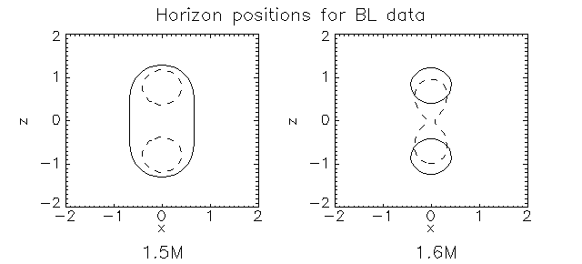

Parameters
Minimal Parameter Settings
Hints for Parameter Settings
Output to Files
Some Results with the Finder
Thorn_MinimumAHF can be used either with a minimization or a flow algorithm.
Parameters
- General parameters
- To activate the thorn use:
ahf_active = "yes"
This parameter is set by default to
"no".
- By default the minimization algorithm is used. To switch
to the flow algorithm one has to set
ahf_flow = "yes"
- Parameters used in evolutions
- To specify how often the finder is called the parameter:
ahf_findevery = 1
must be specified as the number of iterations. Here 1 is default.
- The number of iterations after which the thorn is called the
first time can be specified by:
ahf_findafter = 0
Here the default is 0, calling the thorn also on the initial time
slice.
- Instead specifying the number of iterations one can specify
after how much coordinate time the thorn is called first. This is
done by using the parameter:
ahf_findaftertime = 0.0
When different from zero, this parameter overrides the value of
ahf_findafter. Default here is
also 0.
- Parameters specifying the expansion of the surface in sperical
harmonics.
- The expansion in theta is specified by the maximal number
of terms using:
ahf_lmax = 8
Here 8 is the default.
- If axisymmetry is expected the surface does not need to be
expanded in phi. This is set by:
ahf_phi = "no".
The surface is expanded in theta and phi by default.
- The position of the center of the expansion is set by the
parameters:
ahf_xc = 0.0
ahf_yc = 0.0
ahf_zc = 0.0.
Here the origin is default. The center of the expansion should be
set the expected center of the apparent horizon. But it works also
with a non-centered horizon as long as the center of expansion lies
inside the horizon (otherwise the algorithm will fail).
- The center of the expansion can also be allowed to move. This
is controlled by:
ahf_wander = "yes".
However, at the moment this only works with the minimization
algorithm.
- Finally the radius of the initial sphere can also be specified.
This is controlled by the parameter:
ahf_r0 = 0.0.
The default is 0.0, forcing the largest sphere possible in the grid.
- Parameters for the initial guess
The initial guess can be specified by some parameters which are
set to "no" by default.
- To use on old horizon as initial guess one must set:
ahf_guessold = "yes".
However, if in the evolutionof the apparent horizon jumps
discontinuously it might be lost by using this.
- If no old horizon is used the inital guess can be specified
further for the minimization algorithm. This algorithm is sensitive
to the initial guess, so this is important. The initial guess is
set up by an expansion in spherical harmonics in the first two
coefficients (l=0,l=2). For both of these a number of subdivisions
can be specified by:
ahf_nn0 = 10
ahf_nn2 = 10
The algorithm then tests in this case 100 different combinations to
find the best initial guess.
- It is also possible to use only a sphere as initial guess.
This is much faster and is done by setting:
ahf_sloppyguess = "yes".
In this case a number of spheres (specified by
ahf_nn0) with different radii are
tested for the initial guess.
- If one want to look for an inner horizon instead of an outer one,
this can be done by setting
ahf_inner = "yes".
This only works with the minimization algorithm.
- Parameters for surface intergrals
The number of subdivisions in theta and phi are specified by:
ahf_ntheta = 200
ahf_nphi = 200.
200 is the default for both parameters.
- Parameters indicating symmetries
Symmetries can either be specified by reflection symmetry on single
planes or by octant symmetry. Please notice that this symmetries
refer to the symmetries of the surface, and not of the computational
grid.
- Reflection symmetry on the yz-plane, i.e. symmetry x -> -x,
is indicated by:
ahf_refx = "yes".
For the symmetries y -> -y and z -> -z this is done in an analogous
way by
ahf_refy = "yes"
ahf_refz = "yes"
By default these parameters are set to
"no".
- Octant symmetry is specified by the parameter:
ahf_octant = "yes".
This is set to no by default.
Possible parmeter settings are "yes"
for reflection symmetries on all three coordinate planes and
"high" for an additional rotational
symmetry of pi/2 around the z axis.
- Parameters for the minimization algorithm
- The tolerance for the minimization algorithm can be specified
by:
ahf_tol = 0.1
with 0.1 being default.
- The number if iterations for each step (POWELL algorithm) is
specified by:
ahf_maxiter = 10 .
10 is the default.
- usually the square of the expansion is minimized. To switch
to minimization of the area one can use:
ahf_minarea = "yes"
(default is "no"). Only for time
symmetric data the surface found by area minimization corresponds
to an apparent horizon.
- Parameters for the flow algorithm
- The maximum number of iterations for the flow algorithm is
specified by:
ahf_flowiter = 200,
with 200 being default.
- The tolerance can be set by
ahf_flowtol = 0.0001.
The default is 0.0001.
- Further, the flow algorithm can be tuned by some additional
parameters (see Carsten's paper). The default values are shown
here:
ahf_flowa = 0.01,
gives the alpha parameter for the flow.
ahf_flowb = 0.5,
sets the beta parameter for the flow.
ahf_flowh = 0.0,
specifies the weight of H flow.
ahf_flowc = 1.0,
specifies the weight of C flow.
ahf_flown = 0.0,
specifies the weight of N flow (this is not yet implemented)
The character of the differnet flows and the alpha and beta
parameters are described in Carsten Gundlach's paper on his
pseudo-spectral apparent horizon finder (gr-qc/9707050).
- Parameters for output
- By default no logfile for MinimumAHF is written. To obtain
a log file one must set:
ahf_logfile = "yes"
- There are two modes for verbosity:
ahf_verbose = "yes"
prints messages to screen at the beginning and the end of the
algorithm, and
ahf_veryverbose = "yes"
prints messages also during the iteration process. By default
the verbose mode is set to "yes",
and the veryverbose mode to "no".
- Up to now the thorn only supports 2D output of grid functions.
The output is controlled be the thorn itself, not by cactus standard
output. 2D output can be switched off by
ahf_2Doutput = "no".
In future versions of the thorn a 3D output will be possible by setting
ahf_3Doutput = "yes".
- Finally an area map can be found by setting
ahf_areamap = "yes".
This is useful for looking at the behaviour of the area for
surfaces close to the horizon.
- Parameters for mask
- The mask is 0 inside the horizon and 1 outside, and is used in
black-hole excision (AHBC) techniques. By default the mask is off.
It can be enabled by setting:
ahf_mask = "yes".
This sets the mask only if the finder is sure that a horizon was
found. Setting also:
ahf_weakmask = "yes".
makes the finder set the mask also if a horizon is probably there
but the resolution or lmax are to low to really resolve it.
- There can be a buffer zone between the region inside the
horizon and the region where the mask is 0. This is controlled
by the shrink factor:
ahf_maskshrink = -2.0.
which here sets the region with where the mask is zero to be
2 gridpoints inside the horizon.
Minimal Parameter Settings
Usually only a few of the parameters described above are needed in the
parameter file. The simplest parameter settings for using the flow
algorithm for a full 3D horizon with a sphere as initial guess is
intorder = 2 # Second order interpolation
ahf_active = "yes"
ahf_flow = "yes"
ahf_phi = "yes"
ahf_sloppyguess = "yes"
This looks for a horizon around the origin with lmax = 8. It starts with
a sphere of maximum radius and outputs 2D grid functions. The other
parameters can be used if needed.
Hints for Parameter Settings
In full 3D the flow algorithm is faster than the minimization algorithm.
However, in cases where the terms in the expansion in spherical harmonics
is less than about the minimization can be faster. In axisymmetry this
can happen for lmax<=10.
While the default settings usually work fine, they can be changed to meet
special purposes:
- If the horizon is expected to be far from spherical the parameter
ahf_lmax can be set to a higher value.
12 should be high enough. However values
up to 20 are supported.
- If the latter parameter is set to a values higher then
8 the parameter
ahf_maxiter can be raised to e.g.
14. This can be useful since more
iterations can be necessary for higher coefficients of the expansion.
- Usually I suffices to use a sphere for the initial guell of the
surface. So it can be set
ahf_sloppyguess = "yes".
- The finder is not running with the convergence mode of cactus,
since there are confusions with the names of the finder's output
files.
Output to Files
The output of the thorn consists of two gridfunctions and several one dimensional output files.
- To depict the position of the horizon most important are the
files ahfgrid_2d_...ieee. This files
contain a 2D gridfunction. The zero level of this locates the horizon.
- The files ahf_exp_2d_...ieee show the
expansion of outgoing photoons on the level set of the gridfunction
ahfgrid. The horizon generally coincides with zeros of the expansion.
- The surface area of the horizon is given in
ahf_area.tl
- ahf_mass.tl contains the mass of the
surface.
- The coefficients of the expansion in spherical harmonics are given
in ahf_coeff.alm.
- The files ahf_circ_eq.tl,
ahf_meri_p1.tl and
ahf_meri_p2.tl contain the equatorial circumference of the
surface, the length of the meridian at phi=0, and the length of the
meridian at phi=pi/2 of the surface, respectively.
- If an output of a logfile is set in the parameters, the log file
for the last time the horizon was called is
ahf_logfile.
Some Results with the Finder
The finder algorithms have been examined with puncture initial data for
single and binary-black hole scenarios.
Calculations with different grid spacings but constant grid size show
convergence of the horizon area. The convergence is of the order of 4,
as should be expected if the radius converges with second order.
This has been checked with different linear momenta in z direction p
z= (0M, 2M, 5M) and vanishing spin. Also for pz=2M
and a spin of 5M in x direction the horizon converges. The figure shows
the case with pz=2M and vanishing spin.
Further not only the area converges but also the shape of the horizon. For
both the minimization and the flow algorithm the horizon converges to
the same shape, as can be seen from the coefficients fo the expansion. The
order of convergence for the coefficients is between 1.4 and 1.7.
By using the parameters ahf_xc, ahf_yc,
ahf_zc it can also be shown that the finder also locates
horizons which are not centered around the point given by these parameters.
This works in general as long as the surface can be expanded in spherical
harmonics around this point but the error increases with the off-centering.
The parameter ahf_r0 can be used
e.g. when dealing with two black holes. If one searches for separate
horizons one can center the finder on one of the locations of the
holes and use an initial radius ahf_r0
smaller than the coordinate distance of the holes. With this parameter
settings the single horizon can be found faster. But also a setup with
an initial sphere of maximum radius should work at least for the flow
algorithm. This has been checked with puncture data for two holes with
vanishing linear and angular momentum for each hole (equivalent to
Brill-Lindquist data). Here for a coordinate distance of the holes of
1.6M the separated horizons for the holes are found but no common
horizon. For a coordinate distance of 1.5M a common horizon is found
and also single ones, which are inner surfaces in this case. This coincides
with other work where the critical coordinate distance for a single horizon
is between 1.53M and 1.56M (gr-qc/9809004).

The dashed lines show inner trapped surfaces in the left figure and
the surface where the algorithm stopped without finding a horizon in
the right figure.
Also the Misner case was checked. Here for mu = 1.35 a common horizon
is found. For mu = 1.37 separated horizons are found. From the
literature we know that (e.g. gr-qc/9809004) the critical value of mu
is 1.36. This is confirmed by the horizon finder.
The information of when a horizon was found can be seen in the cactus-logfile.
There will be output from the thorn even if no horizon was found.
|